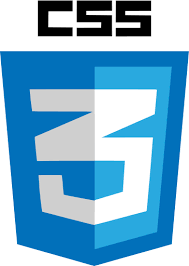

CSS3 Animations
What is CSS3?
CSS3 is the latest evolution of the Cascading Style Sheets language and aims at extending CSS2.1. It brings a lot of long-awaited novelties, like rounded corners, shadows, gradients, transitions or animations, as well as new layouts like multi-columns, flexible box or grid layouts.
On this page we will be going over Desiging, Defining and Triggering CSS3 Animations without Custom Libraries.
CSS3 Animations
CSS3 Animations Allows the definition of animations effects by adding the CSS animation, animation-delay,animation-direction, animation-duration, animation-fill-mode, animation-iteration-count, animation-name, animation-play-state, and animation-timing-function properties, as well as the @keyframes at-rule.